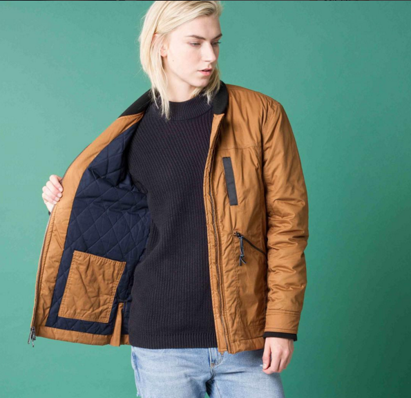
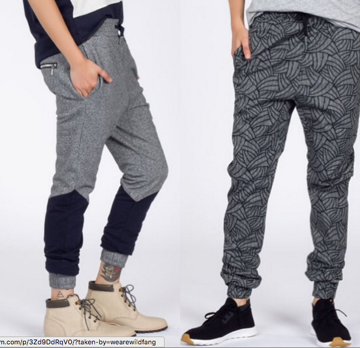

Q&A: WILDFANG
Portland’s Wildfang isn’t simply just a brand, but a growing movement for women who do not fit the mold of what society may deem them. For a long time fashion has fallen short in regards to the outdated gender binary. Tomboys were either subjected to having to shop in the men’s section, and wear oversized, ill fitting clothing not made for their bodies, or wear clothes that didn’t speak to their identity or fashion preference, Then comes Wildfang. Two years ago, founders Emma McIlroy and Julia Parsley saw a void that needed to be filled and Wildfang was born.
Wildfang is urban tailored chic for the woman who wears what she wants, and is what she wants. These dapper duds are more than just bowties and oxfords. From button ups with clean designs and blazers and jackets with an edge, Wildfang has quality craftsmanship and style from head to toe. Inspired by their indie roots in Portland, the city and it’s hip spirit heavily influences the brand. So, whether you like to rock out with your arms out, be simple with a bit steez, or classic and casual, there is something at Wildfang for everyone.

AMFM: How did your history working for the behemoth that is Nike, prepare you for the creative endeavor of starting Wild Fang?
WILDFANG: Nike made me a passionate brand builder. Nike is obsessed with the consumer and puts the athlete at the heart of every decision. I was taught to be utterly consumer obsessed. Without your community, you have no reason to exist.AMFM: The brand started off as an idea grazed over while shopping one day and has grown such a large following since, and you work as a small team, but have such a large reach. How have you seen the brand evolve since it's inception? What has been your most valuable takeaway?WILDFANG: I learn something every single day. This has been the most challenging and also the most rewarding experience of my life. The highlight for me is when we really go above and beyond to make a Wildfang's day. It shows that we really give a shit about them and are working our butts off to build something they can be proud of.
AMFM: How does the aesthetic of Portland inspire the brand? What do you want people to know about Portland that Portlandia doesn't show?
WILDFANG: Did you know that Portlandia filmed an episode in our store? Those guys are hilarious. Anyways, I digress, Julia and I met in PDX, and Wildfang was born here. The DNA of the city is definitely infused into Wildfang's DNA: cheeky, liberal, irreverent, and bold. If Wildfang had been born in a different city, it would probably have looked a little different.

AMFM: What is a Tom Boy to you?
WILDFANG: It represents someone who doesn't settle for the norm, and who doesn't follow rules which don't make sense. It's about authenticity, boldness and a very human spirit.
AMFM: What is the significance of the name?
WILDFANG: Wildfang has a wonderful duality, inherent in the word - you can thank the Germans for that. 'Wild' literally means a raw, fierce, wild energy. 'Fang' means captured, community, safe. That duality not only appropriately describes mine and Julia's partnership, but also the spirit of the company. Our name sounds like it's halfway between a rock band and a kid's book. We are bold and brave, but also cheeky and loyal. We want to break rules, but also be a part of a community. The duality of the word is important.

AMFM: Wild Fang in a way is so much more than a clothing brand , and is more like a movement against the rigid gender lines of the fashion industry and society. Why was this something you wanted to tackle? Why was it necessary for you to fill that void?WILDFANG: It's 2015: it's about time we had the opportunity to wear whatever the hell we want, but you’re right, Wildfang is a hell of a lot more than a fashion brand. We are the home of badass. We wanted to create a place where women were pushed and inspired to be bolder and braver and go leave their mark on the world. Where they felt like themselves and could explore silhouettes and styles often restricted to them. Societal and cultural norms have shifted a lot - we are making great progress as a society in that respect. How people identify and express themselves is changing a lot too and we want to be a part of that. The traditional gender boundaries are being dismantled - in society and fashion. The bottom line is - it's a shitty thing if you can't self express. Self-expression and self-confidence are both vital to feeling fulfilled and reaching your full potential. We want to help with that. We won't always get everything right, but we are trying our best to create a home for strong, confident tomboys who want to leave their mark on the world and are tired of being held back.
FOR MORE FROM WILDFANG:
WEBSITE / INSTAGRAM